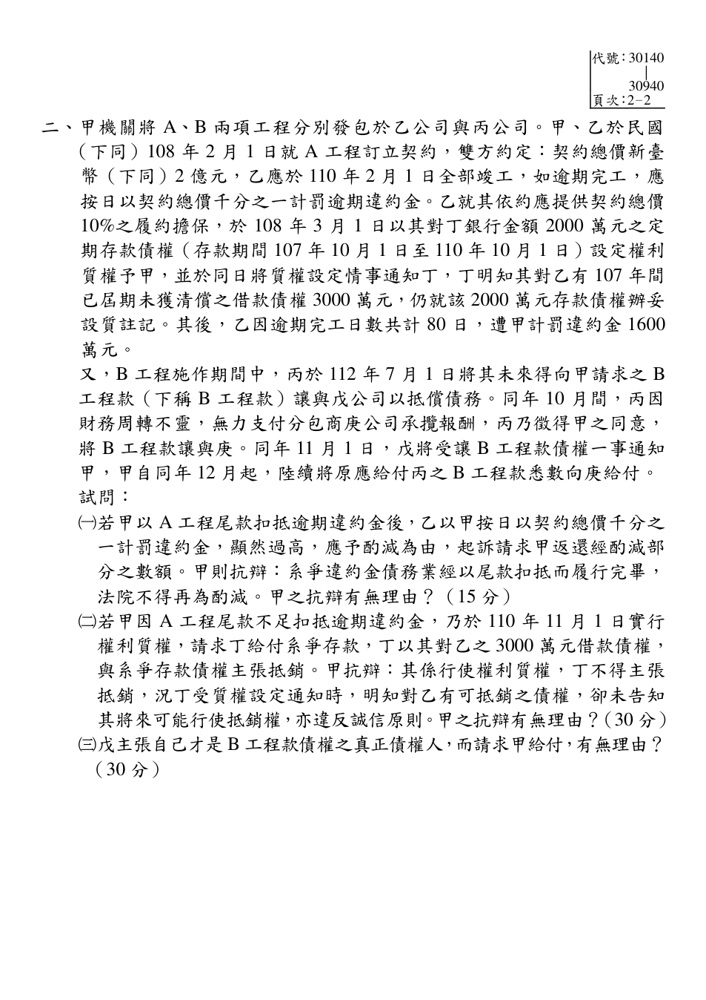
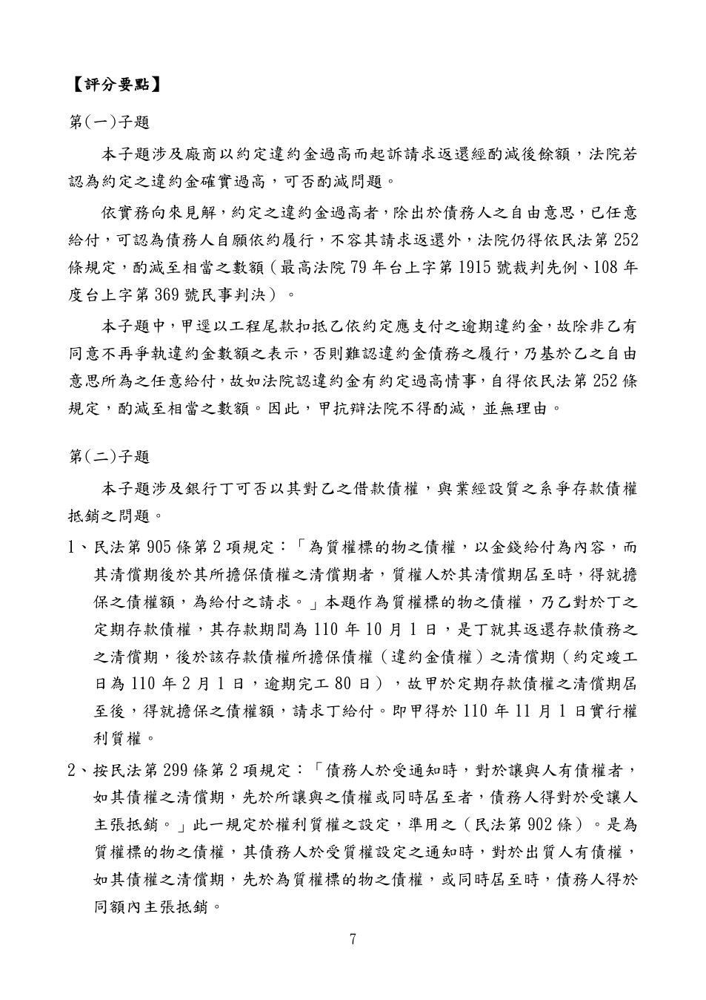
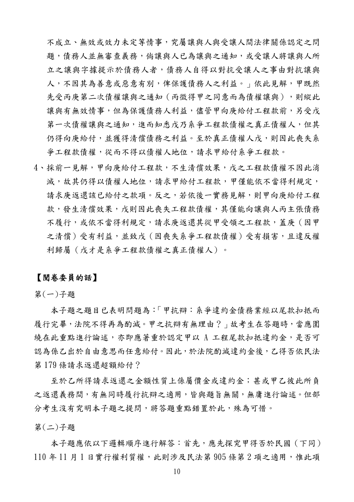

民法第252條｜違約金酌減
約定之違約金額過高者，法院得減至相當之數額。
白話：前提是「約定之違約金額過高」；效果是法院得減至相當數額。扣款已完成，不能取代這項判斷。
生活例子（假設）：阿明請裝潢公司做櫃子，約定每晚交一天罰1萬元。公司晚了10天，違約金10萬元；阿明實際只多花了5,000元住旅館。法院如果認為10萬元過高，可以減到相當的數額。
全國法規資料庫｜現行條文原文債編總論｜債之效力113司律二試｜第二題（一）｜15分
違約金扣抵與酌減：已經扣款，仍要問是否出於自由意思
與本小題相關的共同事實摘要
甲機關將A工程發包於乙公司，108年2月1日訂約，契約總價2億元，約定110年2月1日全部竣工；逾期按日以契約總價千分之一計罰逾期違約金。乙逾期完工80日，遭甲計罰1,600萬元。
第（一）小題原文
（一）若甲以A工程尾款扣抵逾期違約金後，乙以甲按日以契約總價千分之一計罰違約金，顯然過高，應予酌減為由，起訴請求甲返還經酌減部分之數額。甲則抗辯：系爭違約金債務業經以尾款扣抵而履行完畢，法院不得再為酌減。甲之抗辯有無理由？（15分）
題目來源：考選部113年司法官、律師第二試「民法與民事訴訟法（一）」第二題。已用PyMuPDF轉成圖片，逐字核對原卷第2頁的A工程事實及第（一）小題。本講義只作答第（一）小題；完整原卷圖片見頁末。
甲的抗辯無理由：不能僅因尾款已扣抵，就排除法院酌減。
作答時間：120×15÷150＝12分鐘；扣讀題3分鐘，9×33＝297字。擬答正文279字，含標點、數字、標號，排除空白及換行，已用程式核算。
金額核算：200,000,000×0.001×80＝16,000,000元。這只確認題目的原計罰額，並不代表法院會認定過高或減到哪個數額。
約定之違約金額過高者，法院得減至相當之數額。
白話：前提是「約定之違約金額過高」；效果是法院得減至相當數額。扣款已完成，不能取代這項判斷。
生活例子（假設）：阿明請裝潢公司做櫃子，約定每晚交一天罰1萬元。公司晚了10天，違約金10萬元；阿明實際只多花了5,000元住旅館。法院如果認為10萬元過高，可以減到相當的數額。
全國法規資料庫｜現行條文原文無法律上之原因而受利益，致他人受損害者，應返還其利益。雖有法律上之原因，而其後已不存在者，亦同。
白話：本題銜接後段：違約金經酌減部分，原受領的法律上原因其後不存在，據以請求返還。不是要求退回全部違約金。
生活例子（假設）：阿明先繳了3個月補習費3萬元，約定招生不足開不成班，報名就失效。後來班沒開成，補習班收錢的原因不存在了，要把3萬元還給阿明。
全國法規資料庫｜現行條文原文兩條均依全國法規資料庫現行條文，2026-11-15核對。先處理能否酌減，再處理經酌減部分的返還。
切換給付方式，觀察「是否出於自由意思」的判斷。第二種情況是教學假設，不是原題事實。
兩種情況的箭頭都指向甲：錢最後都在甲手上。差別在誰動手，原題是甲自己從尾款扣走，假設情況是乙自己交出去。題目未交代尾款總額與酌減數額。
判決原文（節錄，本題用到的句子畫底線）
……約定之違約金過高者，除出於債務人之自由意思，已任意給付，可認為債務人自願依約履行，不容其請求返還外，法院仍得依前開規定，核減至相當之數額。
規範重點：除出於債務人自由意思、任意給付而可認自願依約履行者外，法院仍得酌減。原案雖有和解付款，仍須探究是否為避免強制執行拍賣所為，不能說「只要和解就不能酌減」。
裁判結果：廢棄發回；沒有終局決定應返還多少。
裁判日期1990-09-07；2026-11-15已看司法院官方掃描全文3頁，並核對法令判解完整原文及效力編註，現與一般最高法院裁判效力相同。前審為臺灣高等法院臺中分院78年度上字第580號判決（79年6月4日）；本件發回後的更審結果未查得。
判決原文（節錄自理由「一、關於廢棄改判部分」，本題用到的句子畫底線）
按當事人約定之違約金過高，經法院酌減至相當之數額而為判決確定者，就該酌減之數額以外部分，如債權人先為預扣，因該部分非出於債務人之自由意思而被扣款，債務人自得依不當得利法律關係請求債權人給付。
規範重點：債權人預扣違約金，非債務人出於自由意思給付，仍得酌減；就經酌減部分，原受領的法律上原因不存在，可依不當得利請求返還。
裁判結果：維持酌減及返還本金；僅利息起算部分廢棄、自為改判。不是發回判決。
裁判日期2019-04-18；2026-11-15已核對官方全文及歷審9筆，另讀最後原審106建上更（二）14。最高法院自己在「一、關於廢棄改判部分」說明預扣與返還，於「二、關於駁回其他上訴部分」維持酌減至104,520元；該數額是該案結果，不可套入本題。其餘歷審未逐件細讀。
延伸：該案另處理返還請求及遲延利息發生時點，本題15分擬答不展開。返還款性質與同時履行抗辯，也不是本小題要求的重點。
尚未加入指定學說文獻。本頁依已核對的官方評分與上列裁判整理，不另增列未查證的學說立場。
甲之抗辯無理由。
一、約定之違約金額過高者，法院得減至相當之數額（民法第252條）。除債務人出於自由意思已任意給付，可認自願依約履行，不容其請求返還外，法院仍得酌減；經酌減部分，原受領之法律上原因已不存在，債務人得依第179條請求返還（79台上1915、108台上369）。
二、本題甲逕以A工程尾款扣抵逾期違約金，係甲單方取償，並非乙出於自由意思之任意給付，題目亦未見乙有同意不再爭執違約金數額之表示。是違約金債務形式上縱因扣抵而消滅，法院如認按日以總價千分之一計罰確屬過高，仍得依第252條酌減，乙就經酌減部分得依第179條請求甲返還。
三、故甲之抗辯無理由。
本段為Claude與Codex各自撰寫後合併，經教師定稿的擬答，並非考選部公布的標準答案。字數以 len(re.sub(r"\s", "", answer)) 計算。
以下為依本題設計的教學練習，並非另一道國考題。
252酌減 → 自由意思限制 → 單方扣款涵攝 → 179返還
不要把「能酌減」寫成「一定過高」。不要把「返還經酌減部分」寫成「全額返還」。
重點應放在自由意思任意給付及經酌減部分的返還；返還款究屬工程價金或違約金、乙的返還義務有無同時履行抗辯，均非本題重點。見下方第10頁原圖。
2026-11-15以PyMuPDF將試題與官方評分PDF轉成圖片，直接看圖核對本小題；製作講義時重新核對下列三張。未以PDF轉文字作最後依據。



同年度其他小題：第一題（一）詐害債權撤銷｜第一題（二）附負擔贈與撤銷｜第一題（三）權利瑕疵擔保｜第二題（二）權利質權與抵銷｜回民法教材總覽